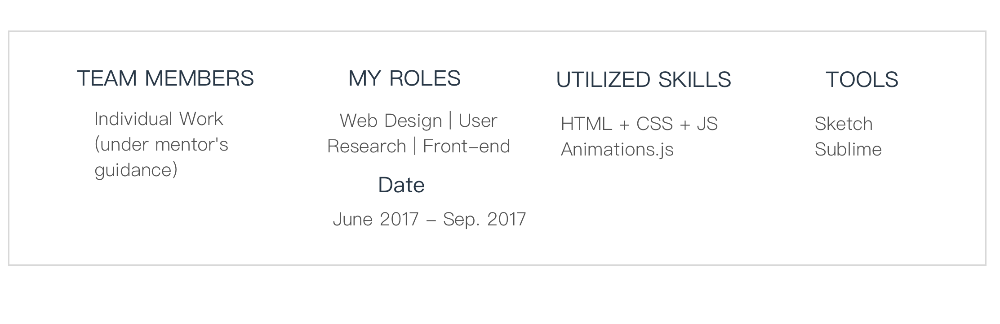
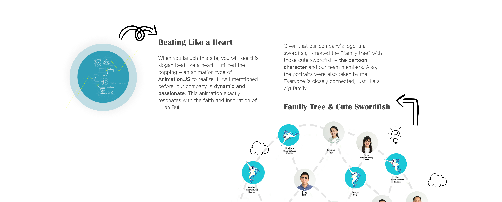
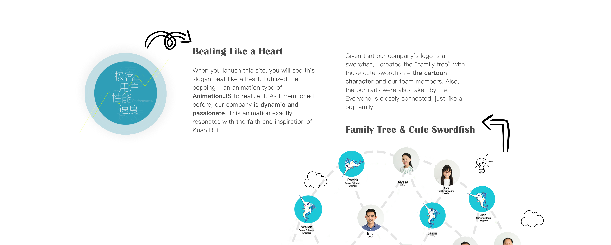

The roles I played and My team
Website Problems & Goals
Kuan Rui IT Corp. is the developer and service providers of quantitative transaction technology software products. It serves quantitative institutional investors and focus on building software products that focus on transaction services. Products of Kuan Rui pursue speed, efficiency, performance and user experience. So does its website.
There are many visits in the past year. However, given that the old site was outmoded, it was the time to create a new one given that this company has developed so fast that information on the web should be restructured. So, we brainstormed and made many solutions to improve user experience and reach the goals - advertising products as well as the company.
The main page displays the highlights from every important section about this company: a concise introduction, main products, dynamic flow charts, partners, contact information, and more. A business is complicated. Therefore, it is important to have a clear structure for presenting important information. For people who want to know what this company is doing, I have designed a set of pages to convey it.
 
